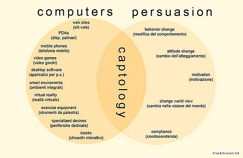

Giornalisti Robot
L'informazione dai 5€ al pezzo al Bot
Il bot è entrato nel linguaggio corrente
e lo intendiamo sempre di più come un compagno di strada... ma che cos'è un bot?
Questo è un Bot?
Vediamo un po' su Wikipedia
Il bot (abbreviazione di robot) in terminologia informatica in generale è un programma che accede alla rete attraverso lo stesso tipo di canali utilizzati dagli utenti umani (per esempio che accede alle pagine Web, invia messaggi in una chat, si muove nei videogiochi, e così via). Programmi di questo tipo sono diffusi in relazione a molti diversi servizi in rete, con scopi vari ma in genere legati all'automazione di compiti che sarebbero troppo gravosi o complessi per gli utenti umani.
Nei paesi anglosassoni, con “Bot” s'intende un programma autonomo che nei social network fa credere all'utente di comunicare con un'altra persona umana. Questi bot migliorano di anno in anno ed è sempre più difficile distinguere un bot da una persona umana.
3 Leggi della robotica di Asimov
- Un robot non può recar danno a un essere umano né può permettere che, a causa del proprio mancato intervento, un essere umano riceva danno.
- Un robot deve obbedire agli ordini impartiti dagli esseri umani, purché tali ordini non contravvengano alla Prima Legge.
- Un robot deve proteggere la propria esistenza, purché questa autodifesa non contrasti con la Prima o con la Seconda Legge.
Il bot deve assistere l'uomo
Il Turco era un automa del '700

Ma era un trucco

Un bot deve simulare il giornalista?
Quartz

Quartz for iPhone has all of that. It’s an ongoing conversation about the news, sort of like texting: We’ll send you messages, photos, GIFs, and links, and you can tap to respond when you’re interested in learning more about a topic
Un Bot traduce lo stream di news in messaggi colloquiali
Un algoritmo memorizza le interazioni
Il bot impara dall'algoritmo
E il giornalista?
Il bot non è una novità
nel 1966 viene creata ELIZA (Wikipedia)

Captologia
 Computers As Persuasive Technologies lo studio dei computer come tecnologie persuasive. Questa recente area d'indagine esplora lo spazio di confine tra persuasione (influenza, motivazione, cambio di comportamento e così via) e tecnologia del computer. fonte immagineL'automazione come induzione dei comportamenti
Il vettore informativo modifica l'acquisizione e la rielaborazione critica del messaggio
Dal broadcast al passaparola automatico
Progettare un bot
Un'orchestra tra umani e macchine
5 fasi di progettazione
- Mobilitare
- Comprendere
- Progettare
- Implementare
- Gestire
Mobilitare
Il bot è qualcosa che compie delle azioni automatiche e fa compiere delle azioni per ottenere un valore (informativo, aggregativo, economico...)
- Quali azioni voglio automatizzare?
- Il bot mi escluderebbe da quali attività?
- Il bot mi fa approfondire altre attività?
- Valorizza il mio ruolo?
Comprendere
Cosa so delle attività e degli ambiti in cui agirà il bot
- Che ambiti?
- Con quali tecnologie?
- Voglio far riconoscere il bot ai miei lettori?
- I miei lettori accetterebbero un bot?
Progettare
Dalle informazione al prototipo
- Ho bisogno di competenze specifiche?
- So cosa voglio?
- I lettori sono sulle piattaforme dove agisce il bot?
Implementare
Applico il bot al contesto e osservo
- Come reagisce il contesto?
- Ci sono errori?
- Ci sono funzioni da aggiungere o togliere?
Gestire
bisogna curare sempre il prodotto
- Ho interesse a mantenere il bot?
- Ho controllo sugli effetti del bot?
- Il bot genera valore (economico e/o reputazionale)?
Definiamo il progetto

Telegram Bot API

le cinture nere dei bot
Piersoft
Matteo "Il Tempe" Tempestini
Cosa si può fare con i Bot di Telegram
Il PorcellinoBot visto "da dentro"
Per fare un bot serve:
- Il progetto (attività e contesto)
- Github (per appoggiare il codice)
- un server o qualcosa che "faccia i conti" (Google Drive, un repository dati con API)
Botfather
L'evoluzione di Telegram: Bot con Bot
Stiamo usando i bot...
o stiamo insegnando ai bot ad usarci?
Grazie

luca corsato www.opensensorsdata.it | Macchine e proxy | doc.opensensorsdata.it